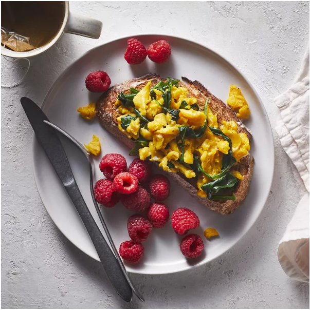
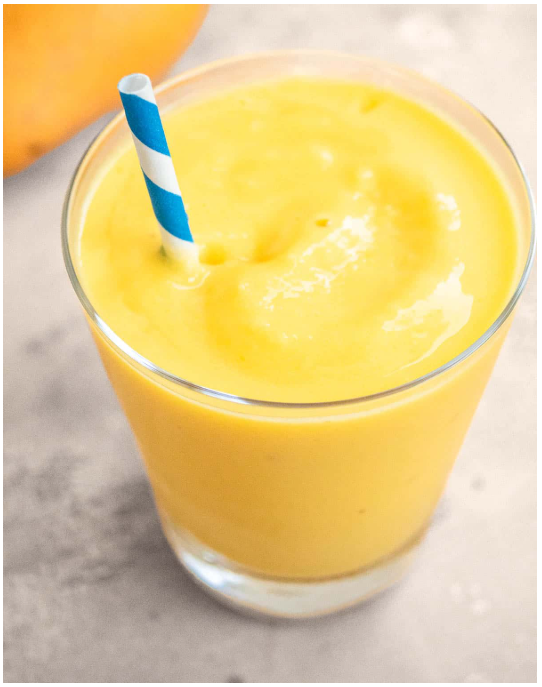

Spinach & Egg Scramble with Raspberries
A quick and wholesome breakfast featuring fluffy scrambled eggs with sautéed spinach, served alongside hearty whole-grain toast and fresh raspberries for a touch of sweetness.
Spinach Frittata with Feta (Lasts 2 days)
Fluffy baked eggs with spinach, herbs, onion, and garlic, topped with creamy feta and warm Mediterranean spices.
Green Mint Smoothie
Spinach, avocado, cucumber, banana, and pineapple blended with coconut water, fresh mint, and lemon for a crisp, refreshing kick.
Mango Smoothie
Tropical mango and banana blended with orange juice and creamy yogurt for a smooth, sunny sip.
Tahini Date Shake
Frozen bananas, sweet Medjool dates, and creamy tahini blended with almond milk, ice, and a hint of cinnamon for a rich, nutty treat.
